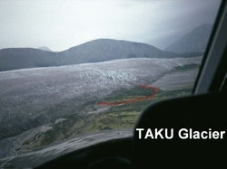
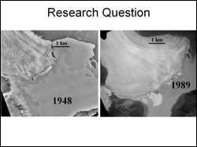
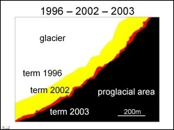

 Taku Glacier has been advancing for several decades. This project investigated the differences in advancement at different locations along the terminus especially in the surroundings of the push-moraine area. It seeks to answer the question "is the glacier advancing at a uniform rate (temporal and spatial)"? The time interval for the study covers the last 25 years. The rate of glacier advance along the terminus might show if the presence of the push-moraine area influences the advance.
 Visual investigations of a series of aerial photographs show that the proglacial shoal area has always been at the same relative position to the terminus. The aerial photographs reveal a large change of the shoal area between 1979 and 1989. The presence of ridges is clearly visible by 1989. Between 1989 and 2000 the ridges do not change their appearance dramatically, whereas the 2002 air photo shows new bulges.
 The adjacent figure is a false color composite with glacial terminus image from 1996 coded in blue, 2002 in green and 2003 in red. Glaciated areas during all three years appear white, glaciers in 2002 and 2003 appear yellow and glacier in 2003 only is red. The limitations of the present analyses are (1) that the determined annual advancement rates are averaged over different time intervals in each case. (2) As digital elevation models were not available, there is no assessment of a three dimensional evolution of the glacier.